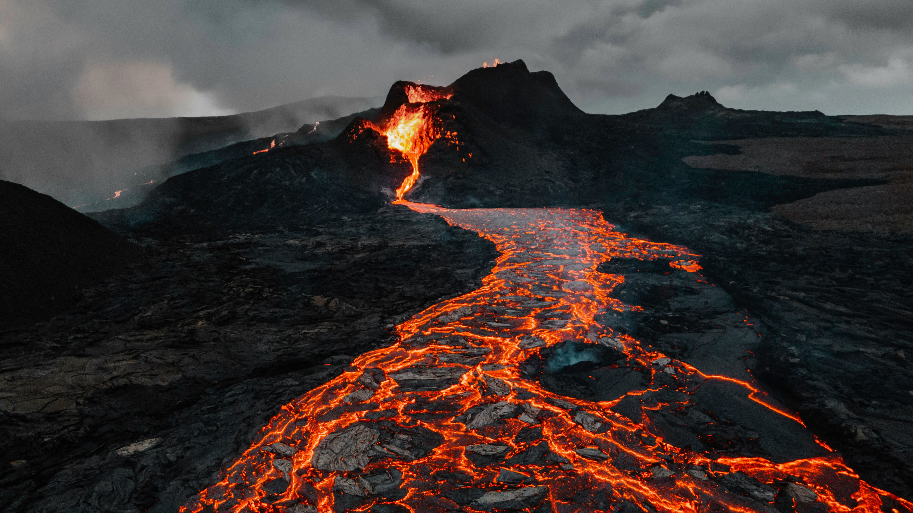

Extinciones de la tierra
Extinción 1
La "primera extinción" a la que se refieren los investigadores es la Gran Mortandad, que ocurrió hace unos 443 millones de años, durante el Ordovícico y se prolongó hasta el Silúrico. Este evento es considerado como el primer gran evento de extinción masiva, donde se perdió más del 85% de las especies, en su mayoría marinas, como graptolitos, conodontos y braquiópodos. La causa principal se atribuye a una edad de hielo a escala global seguida de un rápido calentamiento, pero también se contempla el vulcanismo que provocó anoxia (falta de oxígeno) en los océanos.

Este cataclismo se caracterizó por una pérdida significativa de la biodiversidad marina, ya que las especies que vivían en los océanos se vieron especialmente afectadas por los drásticos cambios en el clima y las condiciones del agua, como el aumento de las temperaturas y la reducción del oxígeno. Las especies que sobrevivieron fueron aquellas que se adaptaron mejor a los bajos niveles de oxígeno, como algunas criaturas que vivían en las profundidades del océano y las que tenían una mayor superficie de intercambio de gases.
En contraste, existe una extinción anterior, ocurrida durante el período Ediacárico hace unos 550 millones de años, cuando más del 80% de los organismos pluricelulares desaparecieron. Aunque este evento fue anterior a las grandes extinciones masivas del Paleozoico y no tan catastrófico, también estuvo relacionado con una caída en los niveles de oxígeno, lo que llevó a la formación de "zonas muertas" en el océano. La causa de esta falta de oxígeno en esa época sigue siendo materia de investigación.
Segunda extinción
La "segunda extinción", o la extinción masiva del Devónico Tardío, ocurrió hace aproximadamente 360-374 millones de años, diezmando un 75% de la vida en la Tierra, especialmente en los mares tropicales y afectando gravemente a los corales y los invertebrados de fondo. Aunque las causas exactas aún se debaten, la teoría principal sugiere un evento de gran glaciación que provocó la reducción del nivel del mar y el enfriamiento de las aguas, creando condiciones letales para muchas especies marinas. Este evento marcó un cambio radical en los ecosistemas oceánicos y en la composición de la vida en el planeta.
Esta extinción masiva fue especialmente devastadora para la vida marina, con una pérdida de más del 75% de las especies, incluyendo la extinción de varios grupos de peces, como los placodermos, y un impacto significativo en los arrecifes de coral, que nunca se recuperaron a su antigua prominencia. La crisis afectó principalmente a las aguas cálidas y a las formas de vida que habitaban los fondos marinos, alterando drásticamente el equilibrio de los ecosistemas marinos. La Tierra se transformó después de este evento, con la aparición y consolidación de nuevas formas de vida adaptadas a los cambios.

Los efectos de esta segunda extinción masiva sentaron las bases para la evolución futura de la vida. Si bien las causas exactas son aún un tema de investigación, se cree que la combinación de factores como la falta de oxígeno en las aguas profundas, la posible explosión de una supernova y los cambios climáticos severos pudieron haber contribuido a esta catástrofe ecológica. La extinción del Devónico Tardío es uno de los eventos más significativos en la historia de la Tierra, demostrando la vulnerabilidad de la vida ante cambios ambientales drásticos.
Tercer extinción
La tercera extinción masiva, también conocida como la extinción del Pérmico-Triásico o la Gran Mortandad, fue el evento de extinción más devastador en la historia de la Tierra, ocurrido hace unos 250 millones de años, que eliminó más del 95% de las especies , incluyendo el 96% de las marinas y el 70% de las terrestres. La causa principal de esta hecatombe biológica fue la actividad volcánica masiva en las Trampas Siberianas, que liberaron gases de efecto invernadero, provocaron un rápido calentamiento global y la acidificación de los océanos.
Este cataclismo se caracterizó por una pérdida significativa de la biodiversidad marina, ya que las especies que vivían en los océanos se vieron especialmente afectadas por los drásticos cambios en el clima y las condiciones del agua, como el aumento de las temperaturas y la reducción del oxígeno. Las especies que sobrevivieron fueron aquellas que se adaptaron mejor a los bajos niveles de oxígeno, como algunas criaturas que vivían en las profundidades del océano y las que tenían una mayor superficie de intercambio de gases.
La catástrofe se caracterizó por una serie de eventos perjudiciales que barrieron la vida en el planeta. Las erupciones masivas de volcanes inyectaron enormes cantidades de dióxido de carbono y otros gases a la atmósfera, lo que provocó un aumento descontrolado de las temperaturas globales. Esto, a su vez, llevó a la pérdida de oxígeno en los océanos y a la acidificación, creando condiciones letales para la gran mayoría de los organismos marinos.
Cuarta extinción

La Cuarta Extinción, también conocida como la extinción del Triásico-Jurásico, ocurrió hace unos 200 millones de años y eliminó aproximadamente el 76% de las especies terrestres y marinas del planeta. Se cree que este evento fue causado por una combinación de factores, incluyendo erupciones volcánicas masivas que liberaron grandes cantidades de dióxido de carbono, lo que provocó un calentamiento global. Esta extinción llevó a cambios significativos en la vida en la Tierra, permitiendo que los dinosaurios se convirtieran en el grupo dominante del planeta.
Las principales causas de la Cuarta Extinción, o extinción masiva del Triásico-Jurásico, incluyen la actividad volcánica en lo que ahora es el océano Atlántico, que liberó gases de efecto invernadero y causó un aumento rápido de las temperaturas globales. Este cambio climático provocó el aumento del nivel del mar y la acidificación de los océanos, lo que devastó a muchas formas de vida. Otras teorías sugieren que el calentamiento liberó metano atrapado en el permafrost, lo que intensificó aún más el cambio climático.
Como resultado de la extinción del Triásico-Jurásico, la vida en la Tierra se transformó drásticamente. Antes del evento, los mamíferos eran un grupo dominante, pero fueron diezmados. Sin embargo, la extinción abrió nuevos nichos ecológicos que fueron rápidamente ocupados por los dinosaurios. Esto marcó el inicio de su largo reinado como la forma de vida terrestre dominante, lo que finalmente condujo al surgimiento de diversas formas de dinosaurios que poblarían el mundo durante la siguiente era.
Quinta extinción
La Quinta Extinción, ocurrió hace aproximadamente 66 millones de años y es la más famosa por acabar con los dinosaurios no aviares y aproximadamente el 76% de las especies del planeta. Se atribuye principalmente al impacto de un asteroide en la península de Yucatán, que provocó una nube de polvo que bloqueó la luz solar, interrumpiendo la fotosíntesis y la cadena alimentaria, además de causar incendios generalizados. Este evento catastrófico no solo eliminó a los grandes reptiles, sino que también marcó el inicio de la Era de los Mamíferos.
Este gran impacto asteroide generó una catástrofe global, con la proyección de una enorme nube de polvo y escombros que rodeó la Tierra. Esta capa de materia en la atmósfera impidió que la luz del sol llegara a la superficie, causando una drástica reducción en la capacidad fotosintética de las plantas y el plancton, lo cual afectó toda la cadena alimentaria. Los incendios forestales masivos también contribuyeron a la destrucción del medio ambiente. La fuerza del impacto fue tal que creó un cráter en la península de Yucatán, demostrando su magnitud y el alcance de la devastación.
La extinción del Cretácico-Paleógeno es la última extinción masiva que ha afectado al planeta y se distingue por estar fuertemente vinculada al impacto de un cuerpo extraterrestre. Si bien ha habido otras extinciones masivas a lo largo de la historia de la Tierra, como las del Ordovícico y el Pérmico, la causada por el asteroide es la única con evidencia geológica definitiva que la asocia con un evento de este tipo. El legado de esta extinción fue un cambio radical en la biodiversidad terrestre, que dio paso a la evolución y predominio de los mamíferos.
Sexta extinción

La sexta extinción masiva es un evento histórico en el que se produce una rápida pérdida de biodiversidad en la Tierra, y se diferencia de las cinco extinciones pasadas en que es causada principalmente por la actividad humana. Las causas principales son la destrucción de hábitats, la contaminación, el cambio climático y la sobreexplotación de recursos, que están provocando la desaparición de especies a un ritmo mucho más rápido que el natural. Las consecuencias de este fenómeno son graves para los ecosistemas y para la humanidad
Esta extinción se caracteriza por la velocidad a la que están desapareciendo las poblaciones de plantas y animales, un proceso que, de forma natural, tomaría cientos de miles de años, pero que ahora ocurre en pocas décadas. Los científicos señalan que el uso insostenible de la tierra para la agricultura, la deforestación y el avance del cambio climático son los impulsores de esta crisis, lo que resulta en una pérdida alarmante de biodiversidad a nivel global.

Para mitigar la sexta extinción, es fundamental implementar medidas como la protección y restauración de hábitats, la reducción de la contaminación, el uso sostenible de los recursos y la adopción de hábitos de consumo más responsables. Un cambio en los modelos de producción y consumo, así como la implementación de leyes y tratados para proteger la biodiversidad, son esenciales para intentar revertir esta situación y asegurar un futuro con mayor equilibrio ecológico.